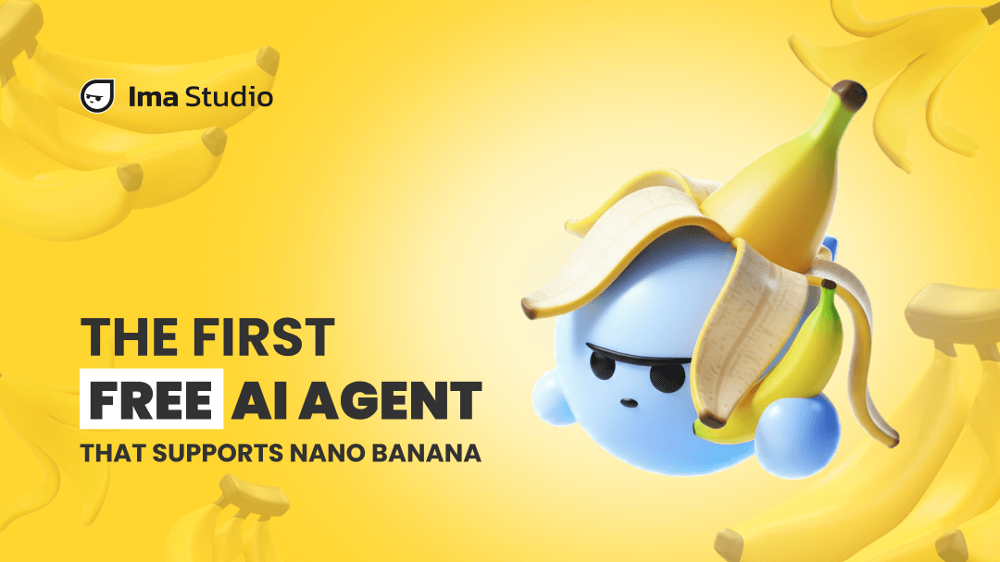
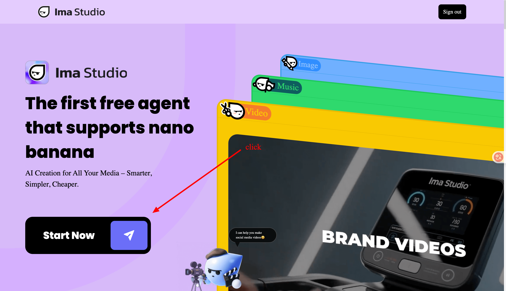
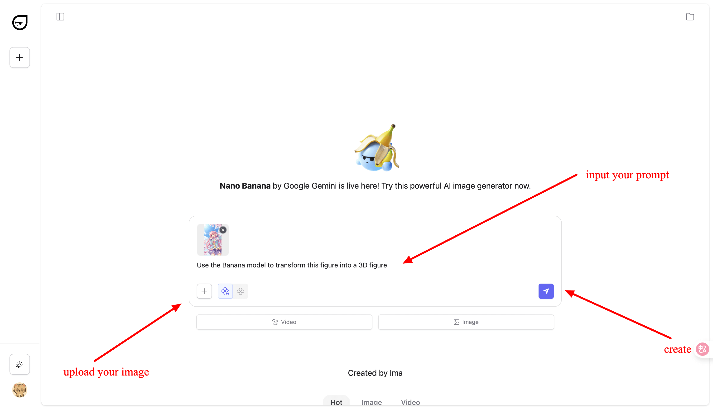
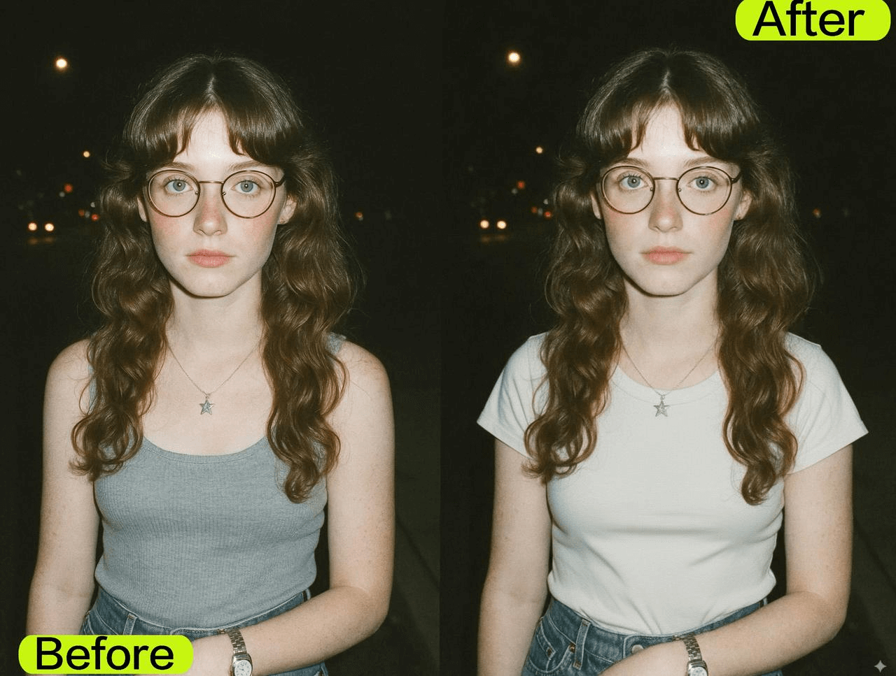
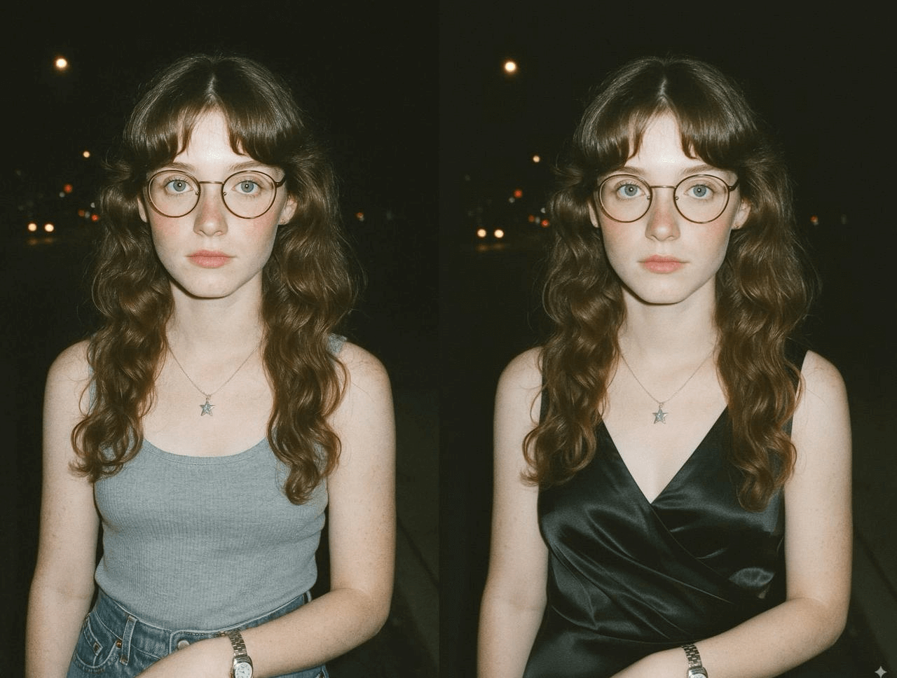
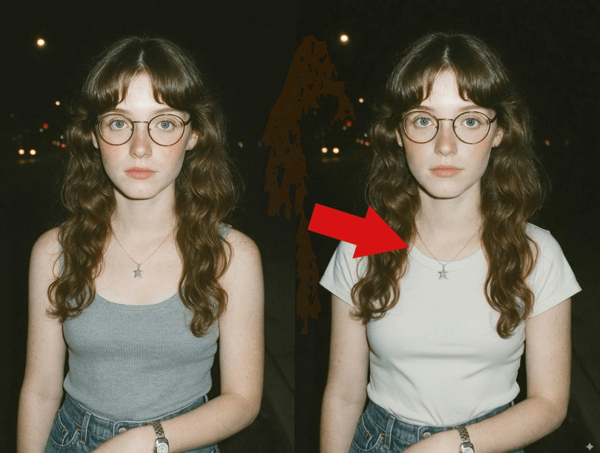
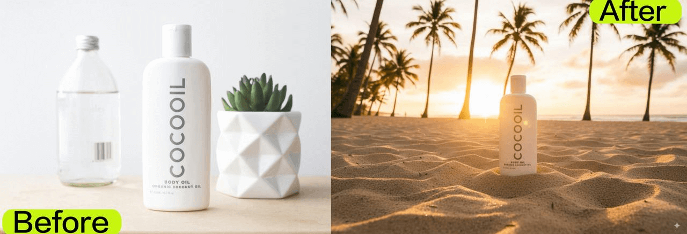
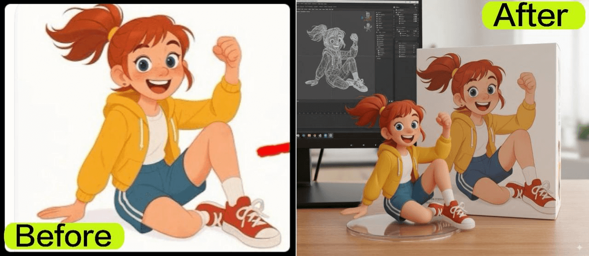
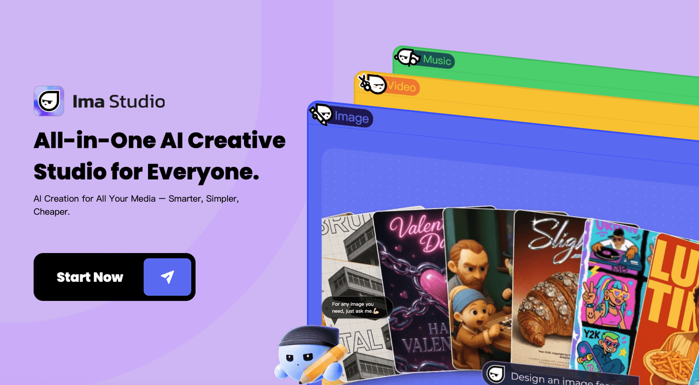

The whole world is going crazy over a banana today.
Not a fruit—Nano Banana. Google just dropped an image model that acts more like a camera than a generator, and people can't stop testing it.
AI editing has always had one fatal flaw: faces that don't stay the same. Every tweak risks a collapse—warped features, broken proportions, or a completely different person. Nano Banana flips that script. It locks the identity in place while you change everything else around it, from hair to light to background.
The results are so convincing that it's no longer real or cake—it's real or AI. For the first time, generate and retouch finally play on the same team.
What Is Google's Nano Banana?
Nano Banana is Google's new image model (official name: Gemini 2.5 Flash Image) that puts generate + retouch in the same brain. In plain terms, it aims to:
- Faces stay true — across different poses, outfits, and even tricky scenes, the same person remains recognizable more than 95% of the time.
- Edits that land — no more spinning the "AI lottery." In most cases, the first attempt already delivers what you asked for, instead of endless retries.
- Fast and polished — outputs look photo-grade, with realistic detail and lighting, usually ready in under two minutes.
- Ahead of the pack — in back-to-back tests against other generators, Nano Banana consistently produces sharper, more believable results.
Google's Nano Banana is already live—you can find it in the Gemini app, or call it through Gemini API and Vertex AI if you're a developer. But honestly, most people don't want to wrestle with API docs just to try an edit.
That's when I stumbled on Ima Studio, a kind of all-in-one AI creative platform. It surprised me because it isn't just a single image demo—you can generate photos, short videos, posters, even audio in the same place. And instead of me worrying "which model should I use," its Agent workflows pick the best one for the job automatically.
How to use Nano Banana in Ima Studio?
Step 1: Open Ima Studio and hit "Start now."
Upload your original photo as the base.

Step 2: Add your instructions.
You can type a step-by-step prompt in plain English ("make her smile," "change the background to a beach"), or upload a second image if you want to blend them together. Just make sure to mention "use banana model" in your prompt.

Step 3: Generate.
Click go, and Nano Banana inside Ima Studio does the rest.
💡 Pro Tips:
- "Keep the same face but change the background to a beach."
- "Make her smile, don't change anything else."
- "Turn this into a Van Gogh painting while keeping identity."
Nano Banana vs The Rest: AI Image Model Showdown
Here's a quick side-by-side look at how Nano Banana and other AI models perform across key metrics.
| Model | Face Consistency | First-Try Success | Prompt Understanding | Speed | Image Quality | Overall Vibe |
|---|---|---|---|---|---|---|
| Nano Banana ⭐⭐⭐⭐⭐ | 95%+ (perfect identity) | ～9/10 | Excellent across multiple edits | Fast — 0.8–2 min ⚡ | 9.5/10 photo-grade | "Game-changer for consistent, usable results" |
| Gemini 2.0 ⭐⭐⭐⭐☆ | 70% stable | ~6/10 | Good—but less context-aware | Moderate (3–6 mins) | 8.5/10 | "Solid, but slower and less stable" |
| Seedream ⭐⭐⭐☆☆ | 40% (often fails) | ~3/10 | Great prompt alignment | 4–8× faster than v2 | 8.0/10 | "Strong in typography, aesthetic control" |
| FLUX Kontext ⭐⭐☆☆☆ | 60% decent | ~5/10 | Good locality, complex prompts tougher | Moderate (3–5 mins) | 7.0/10 | "Artistic but can be chaotic" |
From Glitched Faces to Perfect Fits: Why Nano Banana Feels Different
For years, AI editing tools have stumbled over the same weak spots—faces collapsing, clothes looking fake, and details breaking down the moment you pushed them. Nano Banana feels different because it finally fixes those pain points one by one.
Identity stays intact
Older models often struggled to keep the same person recognizable after just a few edits. Features shifted subtly, smiles disappeared, or you ended up with a "close-enough lookalike."
In these tests, Nano Banana held the exact same face through multiple outfit swaps, hair adjustments, and even holiday add-ons. Expression, hairstyle, and personality all stayed locked in—no more uncanny drift after each change.

Clothes that actually fit
Generated clothes used to look pasted on, with flat textures and unnatural folds. Dresses sat like stiff paper, T-shirts floated without weight, and fabric rarely interacted with light correctly.
With Nano Banana, outfits finally look wearable. The black silk dress reflects highlights like real fabric, the plain white T-shirt falls naturally with soft creases, and the knitted Christmas sweater shows rich texture that catches the light just like it would in real life. Instead of "digital cosplay," the results feel like true photography.

Accessories that don't vanish
Jewelry and glasses have long been weak points for AI—necklaces disappearing, pendants hovering, glasses bending out of shape.
Nano Banana gets the small stuff right: necklaces pass naturally under collars, chains hang with believable weight, and pendants stay perfectly centered even when outfits change. These are the micro-details that separate "AI-ish" from "photoreal."

Lighting that matches the world
When old models tried to merge people with new backgrounds, light sources almost always betrayed them. A beach sunset pasted behind a wedding couple often meant mismatched shadows and glowing skin.
Take today's viral "Taylor Swift engagement photo turned sunset beach scene" meme trend as a casual benchmark. With Nano Banana, the subject and background share the same lighting—warm glow wraps around both faces, shadows align naturally, and it feels like a real photo taken on location. Whether it's a romantic garden shot or a high-profile moment on social media, the lighting just works—the atmosphere reads as authentic, not patched.
Products that belong in the scene
AI-generated product shots often came out looking like cut-and-paste collages: bottles floating, wrong scale, or reflections that didn't make sense.
In these experiments, COCOOIL bottles sat naturally on sand, reflected golden hour light, and blended seamlessly with Christmas props or tabletop setups. Perspective, scale, and materials all lined up—images that don't just look good for social posts, but could pass as ready-to-publish ad creatives.

Non-human objects that hold shape
Figures, toys, and illustrated characters have been notorious for deforming in AI renders—bent limbs, warped proportions, plastic that didn't look like plastic.
Nano Banana pulled off a clean win here too. PVC figure textures, packaging boxes, and even background screens came together without warping, so the result looked like a real collectible captured on camera.
The AI "feel" was gone; it passed as a genuine product shot.

In short
Where older models broke down on faces, clothes, accessories, lighting, products, and non-human details, Nano Banana holds steady. That's why feeds are overflowing with side-by-sides, and why creators are calling it the first AI model that feels production-ready.
What Else? From Single Edits to Full Creations
One thing I realized after playing with Nano Banana inside Ima Studio: once you've nailed that perfect AI image, you don't have to stop there. Because IMA isn't just an editor—it's an all-in-one creative platform.
Bring Your Nano Banana Shots to Life with Ima Studio

- Turn images into short films – feed your Nano Banana results directly into IMA's text-to-video or video style transfer tools to get cinematic clips in minutes.
- Design posters and ads in one go – drop your image into IMA's smart templates, add branding elements or captions, and get ad-ready creatives without juggling different apps.
- Experiment with AI filters & styles – try Ghibli aesthetics, anime rendering, or realistic cinematic looks; Ima Studio applies them on top of your Nano Banana image seamlessly.
- Cross-media workflow – whether it's a still photo, a 10-second TikTok clip, or even an audio-backed reel, you can generate it all in the same dashboard—no exporting back and forth.
Here's how it works: Create a stable, photoreal image with Nano Banana → Open it inside Ima Studio → Pick from video, design, or style workflows → Let the Agent suggest the best tools → Export for TikTok, Instagram, or your next campaign.
Conclusion
Nano Banana finally delivers what people have been asking for in AI editing: faces that stay consistent, clothes that look like they actually belong, details that don't glitch out, and lighting that matches the scene instead of fighting it. What used to feel like fragile AI experiments now comes out looking production-ready—from portraits to product shots, and even figures or non-human objects.
With Ima Studio, you can take it even further. The platform brings Nano Banana together with text-to-video, poster design, audio generation, and creative style workflows, so you can generate, edit, and publish all in one place.
In short: Nano Banana proves what's possible—Ima Studio makes it usable.